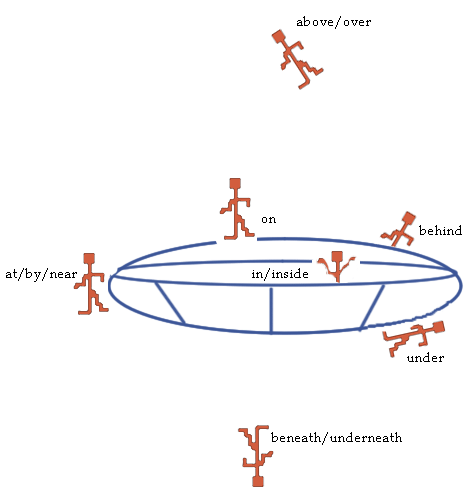
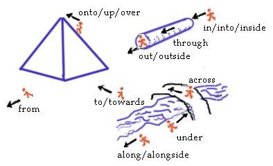

Gradual Grammar:

Часть вторая
10. Предлог, PS
Пространство и время – это система координат, "рамки", которые позволяют сознанию (M) ориентироваться в мире (U).
Предлоги (PS) – инструменты/средства распределения сущностей и отношений наполняющих мир.
Предлоги это слова применяемые для указания координат местонахождения сущностей и/или направленности/свойствах отношений:
ƒ(PS) = logic_properties^time&space ∩ En/Re
Примечание:
Разумеется, пространство и время — порождение логики, но применительно к предлогам они уравниваются в правах с родительницей.
10.1. Виды предлогов, PS_types
По области применения предлоги можно распределить на три типа:
-
предлоги пространственного местопребывания, sPS
- graL “sPS”
- enL “spatial prepositions”
-
предлоги местонахождения во времени, tPS
- graL “tPS”
- enL “temporal prepositions”
-
предлоги логической "увязки", lPS
- graL “lPS”
- enL “logical prepositions”
10.2. Предлоги местопребывания в пространстве, sPS
Для представления пространственных координат сущности нужно увязать её с другими местами (сущностями) в том же пространстве, поэтому предлоги данного вида, sPS, при исполнении своих обязанностей тесно сотрудничают с N^oEn (именами внешних сущностей), либо их словами-масками, MW^En_name.
Например:
in the west
: sPS + AT + N
under the tree
Предлоги пространственной "увязки",sPS, распределяются на
-
предлоги статичного/фиксированного местопребывания, ssPS
- graL “ssPS”
- enL “space static prepositions”
-
предлоги движения (динамичного местопребывания), sdPS
- graL “sdPS”
- enL “space dynamic prepositions”
Для сравнения:
on the bed
: ssPS + AT + N
onto the bed
: sdPS + AT + N
(1) Координационная увязка инопланетян к их летающей тарелке посредством предлогов типа ssPS

Пространственные предлоги (sPS) увязывают не две, а три сущности, подразумевая помимо сущностей увязываемых предлогом ещё и точку зрения источника информации (GI).
(2) Отражение направленности движения посредством предлогов типа sdPS

Некоторые предлоги имеют ту же внешность в разных подвидах. Так, подвидовая принадлежность предлога under определяется лишь с оглядкой на глагол, с которым данный предлог сотрудничает:
be under the bed
: V + ssPS + AT + N
crawl under the bed
: V + sdPS + AT + N
Примечание 2:
Некоторые предлоги внешне неотличимы от наречий, AB, (up, down). Пробным камнем для определения кто есть кто, является наличие/отсутствие координирующей привязки после такого слова:
go up
: V + 'up'^AB
go up the stairs
: V + 'up'^sdPS + AT + N
Что касается структурных различий у этих двух подвидов пространственных предлогов, то ssPS, как правило, односоставны (состоят из одного слова), тогда как sdPS могут складываться из нескольких предлогов, eg. from out of.
GraGra не включает словосочетания типа in front of, in the center of в класс предлогов, поскольку такие группы слов содержат в себе существительные.
10.3. Предлоги местонахождения во времени, tPS
Время рассматривается сознанием как последовательная очерёдность отношений.
Время представляется в виде
-
периодов, tpd
- graL “tpd”
- enL “time period”
с различимо отдаленными друг от друга отношениями для обозначения начала и конца периода ("от рассвета до заката" и т.п.),
-
и/или в виде точек времени, tpt
- graL “tpt”
- enL “time point”
которые, по сути, тоже периоды, но у них начало слито с их концом ("час дня, полночь" и т.п.).
Исторически сложившаяся система мер времени включает в себя различные единицы измерения tpd – от милисекунд до эпох.
t_units={&:second,hour,week,decade}
10.3.1. Порядковые предлоги времени, otPS
Назначение порядковых предлогов времени, otPS,
- graL “otPS”
- enL “ordering temporal prepositions”
в том, чтобы увязать отношение, Re, c точкой или периодом времени, tpt/tpd.
ƒ(otPS) = Re ∩ tpd/tpt
"Увязать" отношение, Re, со временем, значит показать его (отношения) место относительно tpt/tpd.
Таких мест у отношения – три. Оно может
- предшествовать,
- заполнять (или быть внутри)
- следовать за периодом или точкой времени времени, tpt/tpd.
отношение не может пребывать внутри/заполнять точку времени, поскольку та не имеет протяженности.
Предлоги заполнения употреблённые с tpt ставят отношение вплотную за данной tpt.
Вот примеры некоторых порядковых предлогов времени:
до периода/точки
(ante_otPS)
по ходу периода
(concurrent_otPS)
после периода/точки
(subsequent_otPS)
before Friday
by next month
at the weekend
on Monday
during 1979
through(out) a decade
over one year
for two hours
after two days
(with)in a moment
К этим же предлогам принадлежит и группа приблизительных-"распределителей", которые относят отношение, Re, к определенному периоду/точке времени, не вдаваясь в уточнения куда конкретно увязывается данное отношение – до, во время, или после указанного периода/точки времени.
inexact_otPS={&:about,around,near}
Например:
about one o'clock
10.3.2. Время-разметочные предлоги времени, tfPS
Следущий тип предлогов, tfPS
устанавливает не положение отношения относительно периодов/точек времени, но расположение периодов/точек времени относительно отношения.
Иначе говоря, такие предлоги помечают периоды/точки времени как границы начала/завершения отношения.
Вот примеры некоторых предлогов-"вехоставов",
Пространство и время (сами по себе сущности) представляют собою сцену, на которой всевозможные (переменные) сущности вступают в разнообразные (неизменные) отношения.
Предлоги, помимо представления координатов относительно "сцены", применяются и для увязки отношений и сущностей относительно друг друга.
Так, порядковые предлоги, otPS, могут указывать не только расположение отношения, Re, относительно периодов/точек времени, но и его расположение относительно других отношений.
Когда порядковые предлоги типа otPS увязывают отношение не с периодом/точкой времени, а с другим отношением, то это уже orPS
Например:
Примечание:
Пространственные предлоги, sPS, могут увязывать не только внешние сущности пребывающие в физическом пространстве, но также и сущности внутренние, находящиеся в сознании, и при этом сами предлоги трансформируются в:
начало
(start_tfPS )
завершение
(end_tfPS)
from the morning
till/to late at night
since 1999
up to six
untill now
10.3.3. Предлоги соотносительной "увязки", orPS
ƒ(orPS) = Re1 ∩ Re2
after coming
before the war
Правда, само понимание времени вырастает из повторяющихся отношений-"зарубок", типа "солнце взошло",
"петух орёт" и т.п.
10.4. Предлоги логической "увязки", lPS
Например:
in red,
into temper
Например:
with pleasure,
without a hitch
Например:
of human bondage,
from lower classes
Например:
thanks for your help
Например:
I am for you
come to feel the music
Примечание-Предупреждение:
Предлоги являющиеся частью составных глаголов (смотри здесь) перестают быть частью речи, поскольку стали частью слова.
10.5 Заключение
| spatial PS | temporal PS | logical PS | ||||||||
|---|---|---|---|---|---|---|---|---|---|---|
| ssPS | sdPS | otPS | tfPS | orPS | lcPS | lgPS |
| |||